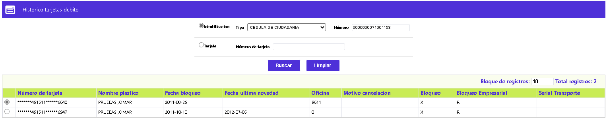

Histórico tarjetas débito
Através de esta opción se le permite a la entidad consultar la información almacenada en la estructura BB_TARJETAS_DEBITO_HIST, mediante un filtro por datos de identificación o por el número de la tarjeta y de coincidir los criterios de búsqueda, retorna la data correspondiente.

A continuación se describen los criterios válidos
|
Tipo identificación |
Campo que posee lista de valores con los distintos tipos de identificación válidos para la entidad, que pueden ser usados como criterio de búsqueda de la solicitud. |
|
Número |
Campo en que debe registrarse el número de identificación del cliente para el que se realiza la consulta de los datos del histórico. |
|
Tarjeta |
Campo en que se registra el número de la tarjeta a consultar en el histórico, puede o no ingresarse los ceros a la izquierda. |
En el evento en que los datos de la consulta concuerden con los almacenados en la estructura arriba indicada, sistema muestra la siguiente información en el bloque inferior del formulario:
|
Número de tarjeta |
Campo en que se muestra el número de la tarjeta, parcialmente enmascarado, de cada uno de los registros que existan en el histórico, en los casos en que la consulta se haya efectuado por los datos de identificación del cliente y el mismo posea más de una tarjeta en dicha estructura. |
|
Nombre plástico |
Campo en que se ilustra el nombre del cliente como aparece realzado en el plástico que le fue emitido. |
|
Fecha bloqueo |
Campo en que en formato AAAA-MM-DD, muestra la fecha en la que se registró el bloqueo al tarjetahabiente o al plástico, si aplica. |
|
Fecha última novedad |
Campo en que en formato AAAA-MM-DD, muestra la fecha en la que se registró la más reciente novedad del cliente o del plástico, si aplica. |
|
Oficina |
Campo que ilustra la oficina o sucursal de radicación de la tarjeta que almacenada en el histórico. |
|
Motivo cancelación |
Si a la tarjeta en alguno de los procesos de reexpedición o reposición o debido al uso inadecuado de la tarjeta le fue cancelada la tarjeta, en ese campo se muestra el motivo asociado al evento. |
|
Fecha bloqueo |
Campo en que en formato AAAA-MM-DD, muestra la fecha en la que se registró el bloqueo al tarjetahabiente o al plástico, si aplica. |
|
Bloqueo |
Campo que, si aplica, ilustra el bloqueo interno que se le asignó al cliente o al plástico almacenado en el histórico. |
|
Bloqueo Empresarial |
Campo que, si aplica, ilustra el bloqueo por empresa que se le asignó al cliente o al plástico almacenado en el histórico. |
|
Serial Transporte |
Si el plástico del histórico estuvo habilitado para el pago de Transportes masivo, se muestra el dato correspondiente al Serial Transporte de dicha tarjeta. |